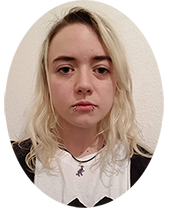

|  |
Amy CampbellPhD Candidate at Museum für Naturkunde, Berlin Details of PhD projectI am a PhD candidate at the Museum für Naturkunde, Berlin where I work on Dicraeosaurid sauropods. |
| 2019-current | PhD Evolutionary Biology, Humboldt University, Berlin |
| 2010-2017 | MSci Earth Sciences, University College London | 2008-2010 | A2 level Biology (A*), Chemistry (B), Maths (A), New Cairo British Internaional School |
| Dates | Work |
|---|---|
| 2009-2010 | Volunteer biology and chemistry teaching assistant at New Cairo British Internation School |
| 2013-2015 | Partner at Waitrose Goldsworth Park |
| 2015-2016 | Administrator of online shopping department at Waitrose Goldsworth Park |
| 2016-2018 | Volunteer at Grant Museum of Geology |
| 2017-2019 | Freelance camera assistant |